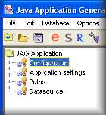
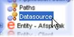

Application configuration
|
Once you have successfully imported the UML model into JAG, you will have to configure the application before you
can go ahead and generate the J2EE project.
An application generated by JAG is based on an application file, an XML file containing information about the application.
There are several things that can be configured before generating an application. These configurations settings are accessed via
the four configuration screens:
- Configuration
- Application settings
- Paths
- Datasource
|  |
Following a UML import, you should in theory only have to configure access to your database (explained below) - the
default values for the other settings should suffice to start with. Once you have correctly configured the database settings
and generated the J2EE application, the application server running the application will automatically create the necessary tables
and primary-key constraints.
Here follows an explanation of the most important configuration settings:
Datasource settings

You can access the datasource settings screen by clicking on the 'Datasource' configuration node in the JAG Application tree.
The settings in this screen are:
- JNDI name: the JNDI lookup name that the application will use to access the database connection manager.
- Database type: the application's database type (Oracle, MySQL and PostgreSQL are currently supported).
- JDBC url: the JDBC connection URL pointing to the database.
- User name: the user login name to be used to authorise the application's database connections.
- Password: the password for the above user name.
Configuration > Template
Application generation templates are an important concept in JAG: these are collections of individual template files that generate
an application with a particular architecture. For example, one template may generate a EJB2.0 application, and another a EJB1.1
application: or there may be templates to generate applications that are tailored to specific application servers.
The template may be selected from the 'Configuration' screen by clicking the 'Select generation template' button and selecting a template directory.
Application settings > Logging
The type of logging used in the generated application is determined by this configuration setting: Apache's Log4J and Sun's JDK1.4 logging are
currently supported.
<<Start page